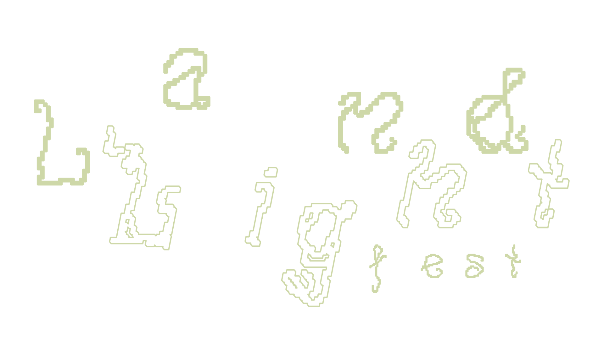

Land Light es un festival de creación de instalaciones efímeras.
Durante la semana del 3 al 9 de agosto de 2026, cincuenta personas nos perderemos en una masía aislada en el corazón de Teruel para explorar la creación con la naturaleza en sinergia con los medios audiovisuales.
En qué consiste
Land Light es un proyecto sin ánimo de lucro, co-creado para la exploración y creación colectiva en torno al Land Art y su fusión con medios audiovisuales como la luz, sonido, visuales… Durante una semana, 50 personas convivimos en una entorno aislado, sin cobertura y sin los suministros habituales con el objeto de impulsar la creación libre de instalaciones.
Para activar la creación y ofrecer un punto de partida, el festival propone seis actividades organizadas en dos líneas de programación:
Land: procesos de experimentación analógica vinculadas a la exploración del territorio
Light: prácticas lumínicas y audiovisuales en diálogo con la naturaleza
A lo largo de la semana se desarrolla un experimento colectivo en el que cada participante investiga, prueba y construye su propia obra y/o colabora en otras. El encuentro culmina en una exposición final festiva, donde se presentan las instalaciones creadas en un recorrido musical.
El objetivo de estas jornadas es crear instalaciones y prolongar su vida durante
El encuentro culmina en una exposición final festiva, donde se presentan las instalaciones creadas en un recorrido musical.


Objetivos

Creación y naturaleza
Fomentar la exploración y la creación artística en diálogo con el espacio natural, promoviendo prácticas respetuosas y conscientes con el territorio.
Comunidad y co-creación
Impulsar la creación de una red de personas interesadas en la cooperación y la construcción colectiva de un encuentro co-creado por y para la comunidad participante.

Desconexión y autonomía
Proponer una experiencia de aislamiento en un lugar sin acceso a servicios habituales como electricidad, agua corriente y cobertura, como vía para repensar la relación con los recursos y el entorno.
Preguntas Frecuentes
Land Light es un espacio de creación dirigido a cualquier persona mayor de 18 años, con interés en el arte, diseño, arquitectura, fotografía, luz, sonido, video, ecología y un largo etc. No hace falta que tengas experiencia en la creación artística, solo que quieras formar parte de un laboratorio colaborativo basado en la experimentación y los cuidados.
Necesitarás un vehículo. Si no dispones de uno, apelamos a la fuerza grupal y ofrecemos un grupo de Telegram para compartir comunicaciones y coche con otros participantes. No te preocupes, porque todxs nos ayudamos para llegar.
No, consideramos que es crucial venir todos los días porque diseñamos esta experiencia para ser disfrutada desde el inicio hasta el final. Claramente puedes llegar e irte cuando quieras, pero desde Land Light queremos incentivar la estancia completa.
No. Este encuentro se basa en la creación situada. Antes de idear las instalaciones, consideramos fundamental reconocer el entorno y dejar que sea este quien inspire el proceso. Por ello, recomendamos traer únicamente materiales con los que te apetezca experimentar. El resto surgirá en el momento.
Sí, siempre y cuando te responsabilices de su bienestar y que veles de que no suponga una molestia para ninguna persona participante y/o actividad. Mencionala como acompañante en el formulario cuando te inscribas 😊